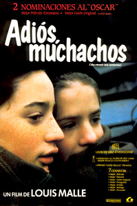

Adiós, muchachos
Invierno de 1944. Acabadas la Navidad, Julien Quentin y su hermano mayor François dejan París, yendo su madre a despedirlos a la estación, resistiéndose Julien a marcharse y se abraza a su madre hasta el último momento.
Llegan poco después al Colegio San Juan de la Cruz, un internado para hijos de familias acomodadas que pueden vivir allí lejos de los horrores de la guerra y continuar con su educación.
Una vez llegado allí, Julien parece haber olvidado ya su casa y se siente integrado, al contrario que Jean Bonnet, un novato con el que todos se meten.
Tanto los Quentin como otros de mejor condición llevan comida de sus casas, siendo la envidia de los demás, obligándoles los sacerdotes a compartirlas con los menos favorecidos, aunque lo que realmente suelen hacer es traficar con ellas a través de Joseph, el ayudante de cocina, que se las coloca fuera a cambio de otras cosas, como tabaco, en el caso de François, o de sellos en el de Julien.
A pesar de no estar en la primera línea del frente, de vez en cuando una alarma les obliga a bajar al sótano para refugiarse, aunque siguen allí con las clases.
Como Bonnet no termina de hacer amigos, un sacerdote le pide a Julien que trate de llevarse bien con él, ya que él tiene influencia sobre los demás y eso le ayudará.
Julien observa que Bonnet toca muy bien el piano, aunque no da griego como los demás ni va a hacer la comunión debido a que, según le explica, es protestante.
Pero una noche se despierta y lo descubre rezando de rodillas en la cama con un kipá en la cabeza y en hebreo.
Observa también cómo cuando unos colaboracionistas acuden al colegio a investigar los sacerdotes se llevan a Bonnet de la clase.
Un día Julien va hasta la taquilla de Bonnet y coge uno de sus cuadernos, descubriendo que el verdadero apellido de Jean es Kippelstein, y no Bonnet.
Un día salen al campo para realizar un juego consistente en encontrar un tesoro, para lo que los estudiantes se dividen en dos equipos, el verde, al que pertenecen Quentin y Bonnet, y el rojo.
Perseguidos por sus rivales, Quentin y Bonnet deben correr e internarse en el bosque, acabando por separarse y encontrando casualmente el primero el tesoro, aunque cuando sale para darse como vencedor ve que no hay ya ningún compañero y que está solo en el bosque, aunque poco después aparece Bonnet, al que sus rivales sí encontraron y ataron a un árbol, y que finalmente consiguió librarse.
Anochece y están perdidos y desorientados sin saber hacia dónde ir y asustados tras ver a un jabalí, cuando de pronto aparece el automóvil de unos soldados alemanes.
Como no los entienden tratan de huir, pero son alcanzados, comprobando que los soldados solo quieren llevarlos hasta el colegio.
Pasarán unos días en la enfermería recuperándose, convirtiéndose Quentin en el nuevo héroe de la clase tras su aventura, contando que vieron al menos una cincuentena de jabalíes.
Quentin trata de hacer que Bonnet coma paté tratando de obligarle a reconocer que no pude comer carne de cerdo, viendo como este lo rechaza alegando que no le gusta, aunque finalmente le dice que conoce su verdadero apellido y su secreto.
Llegadas las fiestas, la mayoría de los chicos reciben la visita de sus familiares, pero Bonnet está solo.
Julien observa cómo este se pone a su lado durante la misa para recibir la comunión como los demás ante el desconcierto del sacerdote, que pasa de largo.
A la salida Quentin le pide a su madre que invite a comer con ellos a Bonnet, yendo a un lujoso restaurante, en el que, junto a ellos se encuentra un nutrido grupo de oficiales nazis.
Poco después entra un grupo de colaboracionistas que piden la documentación a algunos de los comensales, recriminando a uno de ellos, de raza judía que esté en un local prohibido para ellos.
Montan un gran escándalo en el local hasta que uno de los oficiales nazis les pide que se marchen y dejen de molestar a los clientes.
Inevitablemente hablan sobre los judíos y sobre los colaboracionistas, mostrando François su rechazo hacia estos, e, inevitablemente hacia su padre, partidario de Pétain, indicando su deseo de convertirse en partisano.
Por su parte, su madre afirma que no tiene nada en contra de los judíos, aunque odia a Léon Blum
Descubiertos los robos de provisiones de Joseph y sus trapicheos en el mercado negro, el padre Jean habla con los alumnos que negociaban con él, entre los que se encontraban Julien y François, y, aun a sabiendas de que comete una grave injusticia y de que había más culpables, el sacerdote opta por despedir a Joseph.
Poco a poco se afianza la amistad entre Quentin y Bonnet, que un día, y mientras todos bajan al refugio tras el sonido de una alarma, ellos se quedan arriba tocando juntos una canción en el órgano.
Mientras llegan noticias del avance ruso, aparecen los soldados alemanes en el colegio preguntando un oficial de la Gestapo por Jean Kippelstein.
Entonces una furtiva mirada de Julien a Bonnet hace que el oficial se dirija a este, al que se llevará con él, que se despide de sus amigos dándoles la mano.
El oficial les explica que Jean es judío y no francés, y que por la falta de sus profesores han decidido cerrar el colegio, teniendo solo dos horas para hacer sus equipajes.
Les explica entonces otro sacerdote que han detenido al padre Jean por acoger a varios niños judíos a los que trataban de ayudar a salvar sus vidas.
Mientras Julien hace su maleta un soldado lleva a Bonnet a hacer la suya, diciéndole su amigo que no se preocupe, pues lo habrían cogido de todos modos.
Les informan que pese a todo los otros dos, a los que buscaban los nazis consiguieron huir, lo que les consuela un poco.
Poco después Julien va a la enfermería para llevar sus cosas a uno de los niños que están allí, apareciendo allí los dos fugados, que deben esconderse al aparecer los soldados alemanes, escondiéndose uno de los muchachos en la cama y el otro en un armario, descubriendo los alemanes al muchacho escondido en la cama por culpa de la monja encargada de cuidar a los enfermos, aunque el otro consigue huir por el tejado.
Poco después Julien descubre que fue Joseph el delator en venganza por su despido.
Formados en el patio antes de marcharse, ven cómo los alemanes se llevan al sacerdote y a los tres chicos judíos.
Mientras se llevan al sacerdote, los niños se despiden de él: "Adiós, padre", mientras este se despide de ellos: "adiós, muchachos. Hasta pronto".
Cuarenta años después Julien recuerda que el paso del tiempo no ha borrado el recuerdo de aquella fría mañana de enero.
Los tres chicos judíos murieron en Auschwitz, y el padre Jean en Mauthausen.